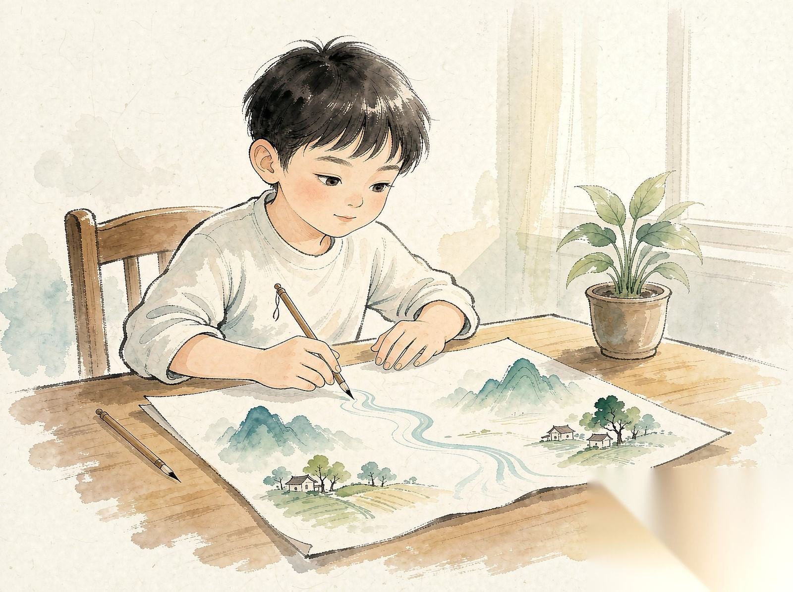

曰江河，曰淮济
古称“四渎”，是华夏四条独流入海的大河。渎，独也，自成一道水脉。
前面我们知晓中华大地处在寒热调和的区位，得天时地利中和之气。
经文接着列出四条主干大河：长江、黄河、淮河、济水，古人称之为四渎。

江、河、淮、济，四条大水，各自一路奔涌，直接汇入大海。
黄河雄浑，裹挟黄土，滋养北方大地；长江绵长温润，滋养南国；淮水横亘中部；济水细小，古书说它几度潜流伏行，故称“三隐三现”。

大地如同一个生命体，这四条大河，就是大地的血脉，水气流转，润泽四方生灵。
水的本性是流通向下，滋养万物。
放到心上理解：人心也有一条“水脉”，念头、情绪宜疏导流通，不堵、不壅塞。心念淤堵，如同河道壅塞，容易泛滥成患；疏导顺流，则生机润泽。
心事压抑、郁结，不肯疏导；妄念奔涌又不加收敛，肆意泛滥。
觉察情绪，顺而疏导，不令淤滞；流通而有节度，如水入河道，有归处。
- 江河淮济，古之四渎，是华夏四条主干水系，独流入海。
- 水主流通润下，为大地生机血脉，滋养两岸生灵。
- 治水贵在疏导，调心也重在疏导，不压抑、不泛滥。
- 流通有节度，收放有度，方是水性中和。
一、先说明济水的变迁。古济水今已变迁，部分河道淤塞并入他水，这是地理的沧海桑田。重点不在考据故道，而在领会“四渎为大地主干血脉”这层喻义。
二、接到五行水。五行之中水主润下、潜藏流通；四渎就是国土之上水性的显化，与前面讲过的五行连成一串。
三、承接教与学的二分。家长带孩子看河流如何滋养万物，属施教一侧；孩子自己学会疏导情绪、不郁结于心，是自主修习。
接上选择力练习：水脉有天然的归向，我们调伏心念，疏导而不放纵，守住分寸。
曰江河，曰淮济
一 · 字义与句读渎，独流，不借他水，直接归海。全句：所说即是长江、黄河、淮河、济水，四渎为华夏大地主干水脉，流通润泽国土。
天地格局（四时、黄赤道、国土区位）已定，再进入大地血脉水系，五行之水在此落地显象。
二 · 命题考辨勘误重点：不必执着考据济水故道变迁，义理不在地理考据。四渎对应四方、四气，是一套象数归类：水主流通、潜藏、归藏，承接五行水、地支亥子、四时冬藏的脉络。
与般若范式互参：江河是假名之相，水流不住，刹那推移，没有固定不变的“江”或“河”；但在这个观测框架下，水脉流通的秩序清晰可见。
联动三才五蕴空杯模型：山川水系种种形相，依托虚空而显现；万象流转，本体不动。
三 · 中西对照华夏水系观：江河不只是水源，是大地气血，连通天地气化，与修身调心同构。
现代水文：研究径流、流域，侧重自然科学，一般不作心性疏导的类比。
其他古文明：也有圣河崇拜，但很少把水系纳入一套完整的四时五行中和体系。
反向思辨：疏导不等于放任自流。水要有河道，心念要有边界，这正是“流通”与“散乱”的分界。
四 · 与前后课的张力次第链条继续延伸：…… → 我中华，在东北 → 曰江河，曰淮济
呼应“人不学，不知义”：水性流通而有河道，做人行事，贵在通达而守节度。
呼应“玉不琢，不成器”：调心如治水，疏而不堵，导而不漫。
呼应“教之道，贵以专”：仰观天象、俯察山川，在大地生机之中体悟中和流通之道。
一、四渎对应四方四气，如何与五行相配？四水之外，土的枢纽落在何处？
二、疏导与克制如何平衡，什么时候宜疏、什么时候宜止？
三、水本向下，而生机向上，这一向下之性，如何支撑生生不息？